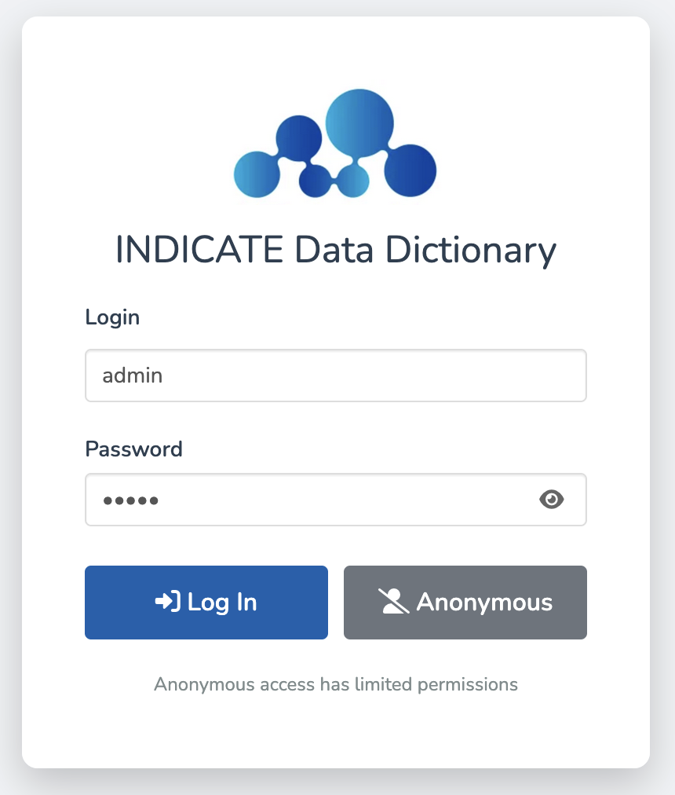
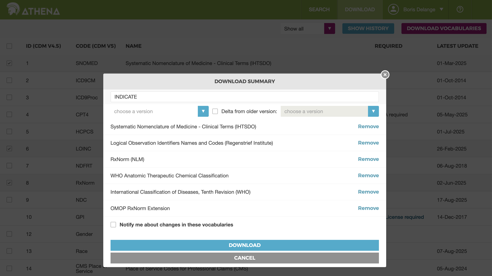
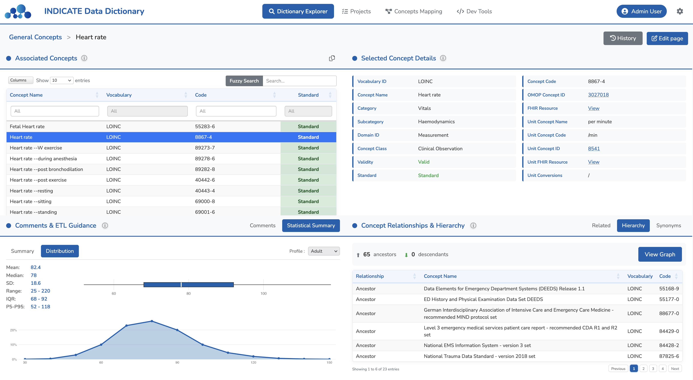

Quick Start
This guide will help you get started with INDICATE Data Dictionary in just a few minutes. Follow these steps to explore the dictionary and understand its structure.
Step 1: Launch the Application
After installation, start the application:
indicate::run_app()The application will open in your default web browser. See the Installation page for available arguments (language, port, etc.).
Step 2: Log In
You will see the login screen. Use the default credentials to log in:
- Username:
admin - Password:
admin
For production use, change the default password immediately after first login via the Users management section.
Step 3: Configure OHDSI Vocabularies
On first login, you will see an error message indicating that OHDSI vocabularies are not loaded. The dictionary requires these vocabularies to function properly.
Downloading OHDSI vocabularies requires registration on the ATHENA website and acceptance of vocabulary license agreements.
-
Register on ATHENA
Create an account at athena.ohdsi.org
-
Select vocabularies
Select the following vocabularies for download: SNOMED-CT, LOINC, RxNorm, RxNorm Extension, UCUM, ATC, ICD-10.
 -
Download and extract
Download the ZIP file and extract it to a folder on your computer. Note the path to this folder.
-
Configure in the application
Click the gear icon in the top right corner of the application, then select "General settings".

Specify the path to the folder containing the CSV files downloaded from ATHENA (CONCEPT.csv, CONCEPT_RELATIONSHIP.csv, CONCEPT_ANCESTOR.csv, etc.).

Step 4: Explore the Dictionary
Once vocabularies are loaded, you can access the Dictionary Explorer page. This is the main interface for browsing the INDICATE dictionary.
General Concepts List
The initial view displays a DataTable with all general concepts from the dictionary.

- Use the category badges at the top to filter by category (Vitals, Labs, Drugs, etc.)
- Use the Fuzzy Search input (top right) to search concept names with approximate matching
- Use the column filters for exact matches only
- Double-click on a row or click the View details button to see the concept details
General Concept Details
When you select a concept, you enter the detail view organized in four panels:
- Top-Left: Associated concepts - View associated concepts from OMOP vocabularies (SNOMED, LOINC, RxNorm, ICD-10) for this general concept
- Bottom-Left: Expert comments - Read guidance from clinical experts to help with ETL and view the expected statistical distribution for this concept
- Top-Right: Concept details - See details about the selected concept, with links to ATHENA and the FHIR Terminology Server
- Bottom-Right: Related concepts - View related concepts, hierarchy (ancestors/descendants), and synonyms
Next Steps
Now that you're familiar with the basics, learn more about:
- Data Dictionary - Explore in more detail the dictionary structure, general concepts, and expert comments
- Projects - Create projects and assign general concepts to your project
- Concept Mapping - Align your source data with dictionary concepts using the semantic mapping module